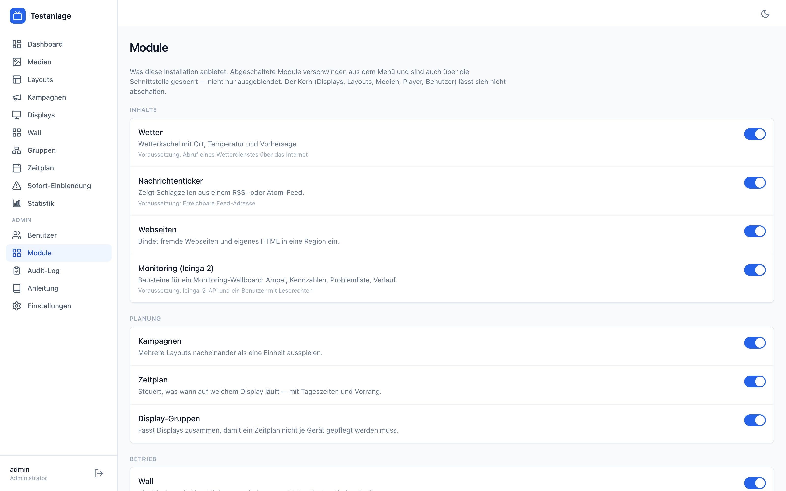

Module
Der Kern ist klein, alles andere lässt sich abschalten.
Der Kern ist klein
Zum Kern gehören Displays, Layouts, Medien, Player und Benutzer. Ohne die bliebe nichts übrig, was man bedienen könnte — sie lassen sich nicht abschalten.
Alles andere ist ein Modul. Ein Administrator schaltet es unter Module ab, und dann verschwindet es aus dem Menü, aus der Auswahl der Inhalte und aus der Schnittstelle. Abgeschaltet heißt gesperrt, nicht nur ausgeblendet: die Oberfläche ist keine Sicherheitsgrenze.
Standard ist an. Eine frische Installation ist vollständig; erst ein bewusstes Abschalten ändert etwas. Und eine bestehende Installation verhält sich nach einem Update genau wie vorher.

Die Module
Inhalte
| Wetter | Wetterkachel. Braucht den Abruf eines Wetterdienstes über das Internet. |
| Nachrichtenticker | Schlagzeilen aus einem RSS- oder Atom-Feed. |
| Webseiten | Fremde Webseiten und eigenes HTML in einer Region. |
| Monitoring | Bausteine für ein Wallboard aus Icinga 2. Braucht die API und einen Benutzer mit Leserechten. |
Planung
| Kampagnen | Mehrere Layouts nacheinander als eine Einheit. |
| Zeitplan | Was wann auf welchem Display läuft, mit Tageszeiten und Vorrang. |
| Display-Gruppen | Damit ein Zeitplan nicht je Gerät gepflegt werden muss. |
Betrieb
| Wall | Alle Displays als Live-Miniplayer. |
| Sofort-Einblendung | Meldung sofort auf allen betroffenen Displays. |
| Statistik | Verfügbarkeit, Wiedergabenachweis, Fehlerbilder. |
| Änderungsprotokoll | Wer wann was geändert hat. |
Was beim Abschalten passiert
- Vorhandene Inhalte bleiben. Ein bereits eingerichtetes Widget verschwindet nicht aus einem Layout — es lässt sich nur nicht mehr neu hinzufügen.
- Die Schnittstelle antwortet klar. Ein Aufruf auf einen abgeschalteten Bereich bekommt eine Meldung mit dem Namen des Moduls, nicht ein „nicht gefunden". Wer sucht, soll den Schalter finden, nicht das Netzwerk debuggen.
- Abhängigkeiten werden mitgeteilt. Wer ein Modul abschaltet, von dem andere abhängen, bekommt gesagt, was dadurch ebenfalls stillsteht.